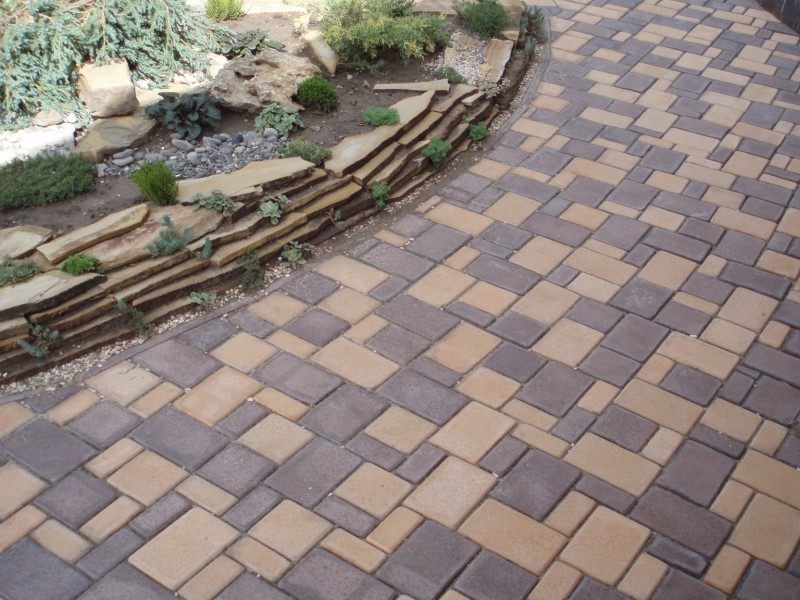

Укладка теплоизолирующих слоев
Теплоизолирующие слои — это один или, в некоторых случаях, несколько слоев плит из пенопласта. При необходимости, материал, из которого изготавливаются плиты, может быть заменен на другой, обладающий похожими теплоизоляционными параметрами. Плиточные материалы данного рода требуется укладывать таким образом, чтобы каждая из них равномерно прилегала к земле. В том случае, если земляное полотно само по себе имеет ровную поверхность — это довольно просто. Но если поверхность обладает локальными впадинами, их необходимо разровнять песком. Какие-либо провалы или неровности под теплоизолирующими плитами из пенопласта недопустимы. В том случае, если речь идет о теплоизоляции в два или три слоя, швы нижних слоев плит требуется перекрывать плитами верхних рядов — так, чтобы швы не накладывались друг на друга. В определенных случаях в виде морозозащитного слоя могут выступить золошлаковые или бетонные смеси, обладающие легким заполнителем, а также пористые материалы из минералов, прошедшие обработку вяжущими веществами. Данные смеси необходимо изготавливать в бетоносмесителях принудительного перемешивания. В процессе укладки температура готовой смеси не должна опускаться ниже 5 °C. Любое движение строительного транспорта по готовому слою теплоизоляции возможно только после того, как материал достигнет минимум 3/4 проектной прочности.
НАЗАД